Capitolo 11 La verifica delle assunzioni di base: metodi diagnostici
11.1 Introduzione
Nel momento in cui eseguiamo test d’ipotesi nell’ambito di un modello lineare, assumiamo implicitamente che i dati rispondano ai seguenti requisiti:
- il modello è corretto;
- la risposta osservata è una funzione del modello più o meno l’errore sperimentale;
- l’ errore sperimentale è indipendente dal modello;
- gli errori sono normalmente distribuiti, con media zero e varianze omogenee;
- gli errori rilevati in esperimenti ripetuti sono tra loro indipendenti.
- assenza di osservazioni aberranti;
In genere, le assunzioni di base non possono essere verificate a priori, perché per quasi nessuno dei fenomeni naturali sono note le vere relazioni causa-effetto. Per questo motivo, si procede in primo luogo al fitting del modello e, successivamente, si verifica il rispetto delle assunzioni di base.
Il problema è importante perché ogni deviazione rispetto agli anzidetti requisiti può inficiare la validità dei test d’ipotesi, modificando il livello di significatività. A proposito dei dati aberranti, dobbiamo dire che, se è sbagliato correggerli arbitrariamente, senza aver prima accertato che siano effettivamente frutto di errore, potrebbe essere altrettanto sbagliato lasciarli nel dataset, in quanto essi possono influenzare in modo molto marcato il risultato dell’analisi. E’evidente comunque che l’eventuale correzione dovrebbe riguardare una larga minoranza dei dati sperimentali raccolti (orientativamente, non più del 5%), altrimenti si dovrà necessariamente pensare di ripetere l’esperimento.
11.2 Procedure diagnostiche
In questo capitolo ci occuperemo di diverse procedure, così classificate:
- ispezione grafica dei residui
- test di Anscombe e Tukey per la ricerca degli outliers
- test di Bartlett e test di Levene per l’omogeneità delle varianze
- Procedura di Box e Cox per la scelta delle trasformazioni stabilizzanti
11.3 Analisi grafica dei residui
La gran parte dei pre-requisiti fondamentali di un dataset riguardano la struttura dei residui e, di conseguenza, l’ispezione grafica di questi ultimi, eventualmente accompagnata da semplici strumenti algebrici, possono permetterci di evidenziare la gran parte delle ’patologie’ di cui soffrono i dati sperimentali. Si può affermare che l’ispezione dei residui è uno strumento diagnostico fondamentale il cui impiego dovrebbe rientrare tra le metodiche di routine per ogni elaborazione statistica dei dati.
Ricordo che i residui sono gli scostamenti tra i valori osservati e quelli attesi sulla base del modello in studio; hanno sempre media 0, mentre la deviazione standard cambia di volta in volta.
11.3.1 Grafico dei residui contro i valori attesi
Il metodo grafico più utilizzato per l’analisi dei residui consiste nel plottare i residui verso i valori attesi. Se non vi sono problemi, i punti nel grafico dovrebbero essere distribuiti in modo assolutamente casuale, come nel grafico sottostante.
set.seed(1234)
plot(rnorm(100, 0, 2.5) ~ c(1:100), xlab="Valori attesi",
ylab = "Residui", pch=21, bg="red")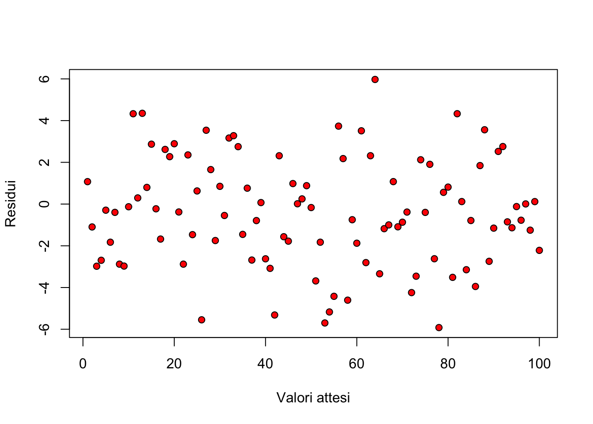
Le osservazioni aberranti (outliers) sono chiaramente indicate nel grafico dei residui come punti isolati rispetto agli altri (Figura sottostante).
set.seed(122)
plot(c(rnorm(100, 0,2.5), 16) ~ c(1:100, 60), xlab="Valori attesi",
ylab = "Residui", pch=21, bg="red")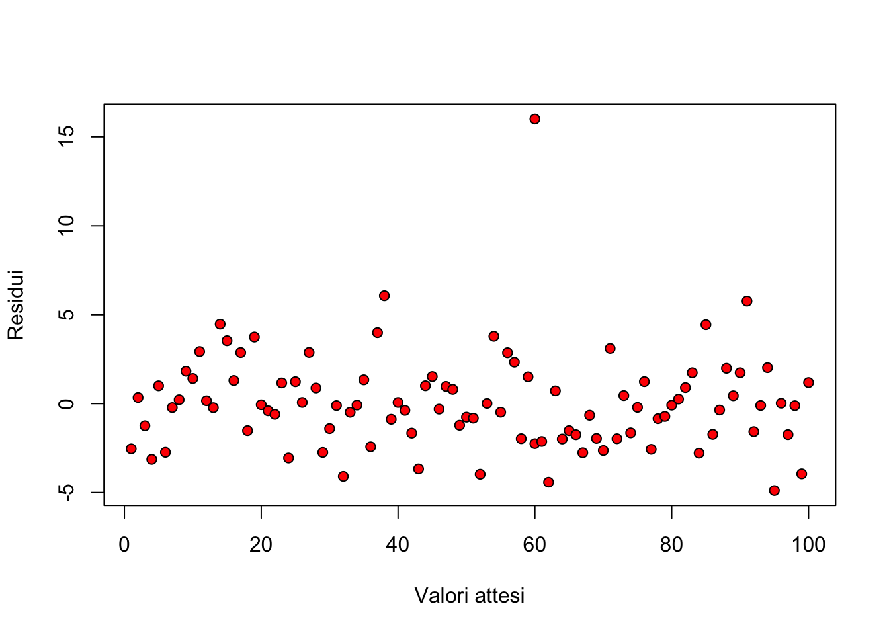
L’eterogeneità delle varianze è invece indicata da residui che si allargano o si stringono procedendo verso i margini del grafico (Figura sottostante), facendo emergere una sorta di proporzionalità tra media e varianza.
set.seed(424)
dati <- c(1:100)
plot(rnorm(100, 0, dati/20) ~ dati, xlab="Valori attesi",
ylab = "Residui", pch=21, bg="red")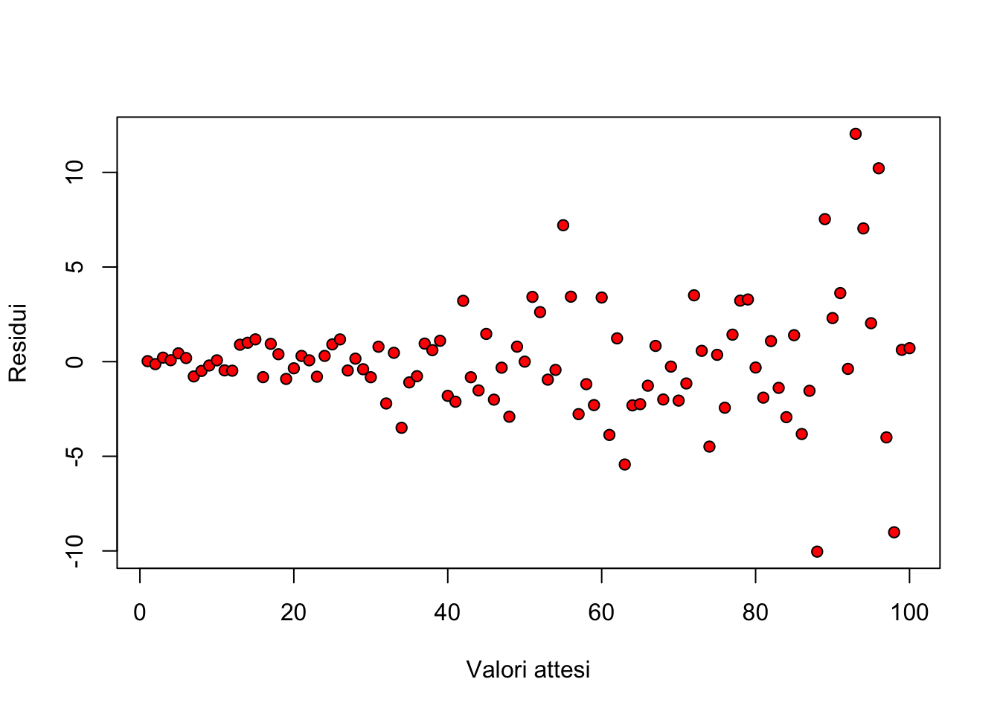
A volte la relazione causa effetto non è lineare o, comunque, il modello devia sistematicamente dai dati osservati. Di conseguenza, i residui mostrano un evidente pattern legato al segno. Ad esempio, i residui sono tendenzialmente negativi per bassi valori attesi e positivi per alti valori.
set.seed(424)
dati <- c(1:100)
plot(rnorm(100, -5 + 0.1*dati, 1.5) ~ dati, xlab="Valori attesi", ylab = "Residui", pch=21, bg="red")
abline()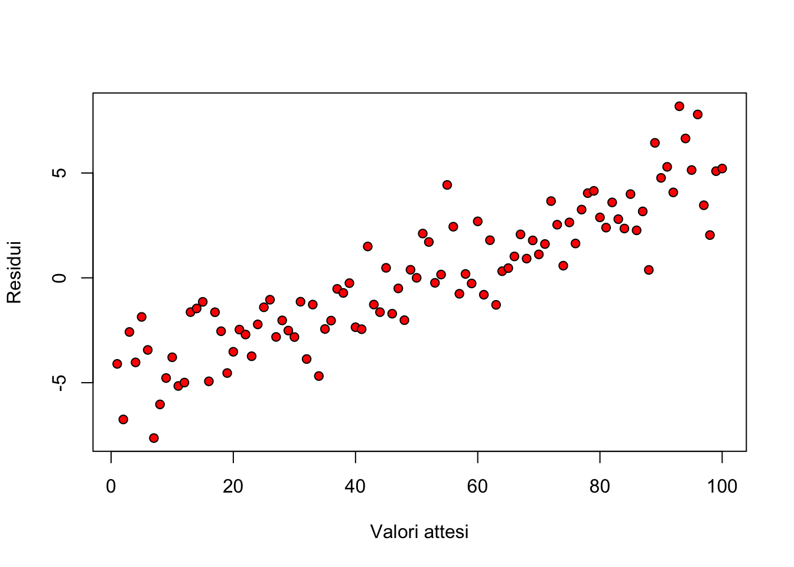
11.3.2 QQ-plot
Il grafico dei residui verso i valori attesi non è invece in grado di evidenza problemi di non-normalità. A questo fine, risulta molto utile un QQ-plot (quantile-quantile plot), nel quale i residui standardizzati vengono plottati contro i rispettivi quantili di una distribuzione normale standardizzata (figura sottostante).
par(mfrow=c(1,2))
curve(dnorm(x, 0, 1), from=-5, to=5, col="red",
ylab="Density", main="Distribuzione normale")
set.seed(424)
res <- scale(rnorm(100, 0, 2.5), scale=T)
qqnorm(res, xlab="Valori attesi",
ylab = "Residui", pch=21, bg="red", xlim=c(-4,4),
ylim=c(-4,4))
qqline(res)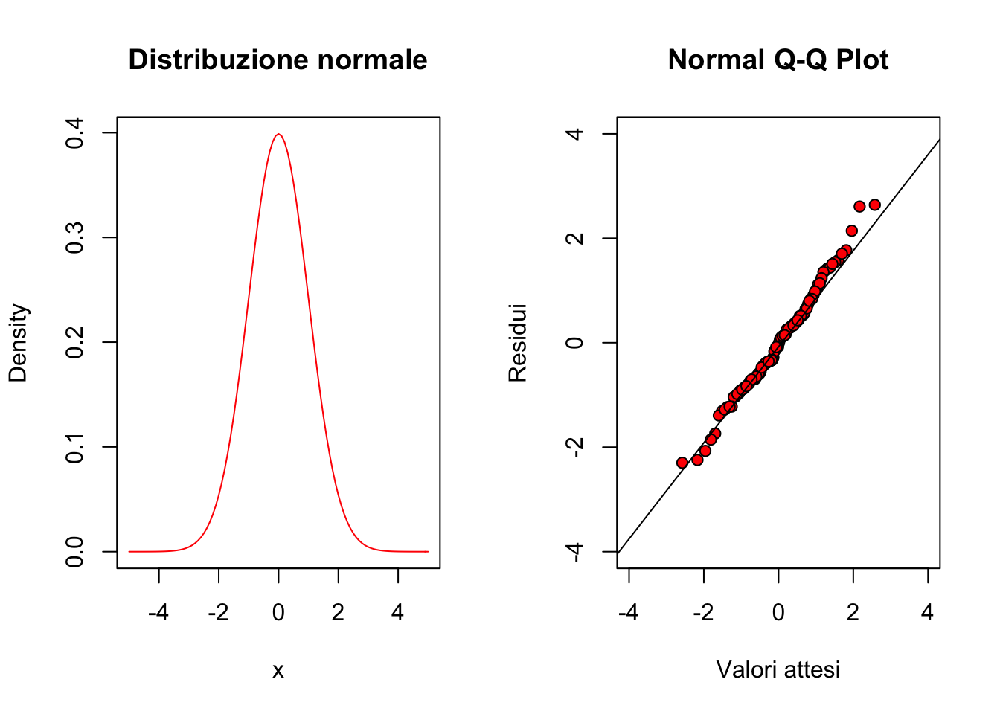
Le deviazioni più diffuse dalla normalità sono relative alla simmetria (skewness) e alla curtosi della popolazione. In particolare, i nostri residui potrebbero avere asimmetria positiva (right-skewed: la media è maggiore della mediana), in modo che abbiamo più residui negativi che positivi, mentre questi ultimi sono mediamente di più elevato valore assoluto. Ad esempio, una distribuzione log-normale centrata è right-skewed. In questa situazione, i residui alti positivi dovrebbero avere una maggior frequenza che nella distribuzione normale corrispondente, al contrario di quelli bassi negativi.
par(mfrow=c(1,2))
curve(dnorm(x, 0, 1), from=-5, to=5, col="red",
ylab="Density", main="Asimmetria positiva",
ylim=c(0,0.5))
curve(dlnorm(x + 3, log(3), 0.35), add=T)
legend("topright", legend=c("n", "log-n"),
lty=c(1,1), col=c("red", "black"), bty="n")
#Estraggo una campione da una log-normale
set.seed(1234)
d <- rlnorm(100, 2, 0.5)
res <- scale(d, scale=T)
#Produco un QQ-plot
qqnorm(res, xlab="Quantili teorici",
ylab = "Residui standardizzati",
pch=21, bg="red", xlim=c(-4,4), ylim=c(-4,4))
qqline(res)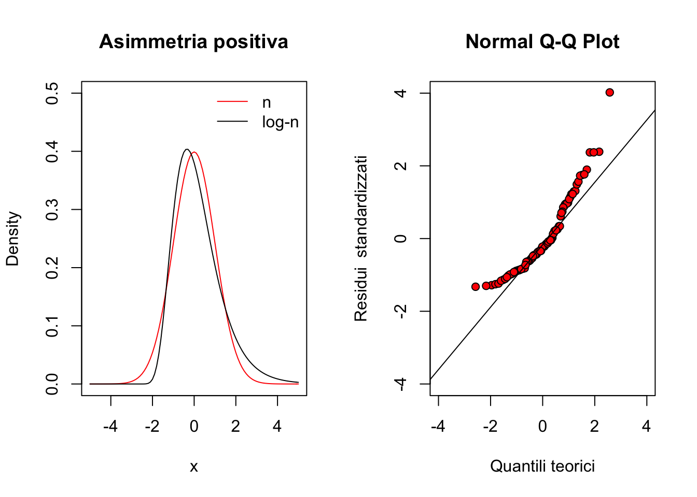
Al contrario, una distribuzione left-skewed (skewness negativo, cioè media minore della mediana; esempio: una distribuzione beta con traslazione, alto \(a\) e basso \(b\)), si comporta come indicato nel grafico seguente:
#Estraggo una campione da una distribuzione beta
par(mfrow=c(1,2))
curve(dnorm(x, 0, 0.10), from=-0.6, to=0.6, col="red",
ylab="Density", main="Asimmetria negativa",
ylim=c(0,5))
curve(dbeta(x + 0.8, 8, 2), add=T)
legend("topleft", legend=c("normale", "beta"),
lty=c(1,1), col=c("red", "black"), bty="n")
set.seed(1230)
d <- rbeta(100, 8, 2)
res <- scale(d, scale=T)
#Produco un QQ-plot
qqnorm(res, xlab="Quantili teorici",
ylab = "Residui standardizzati",
pch=21, bg="red", xlim=c(-2,3), ylim=c(-2,3))
qqline(res)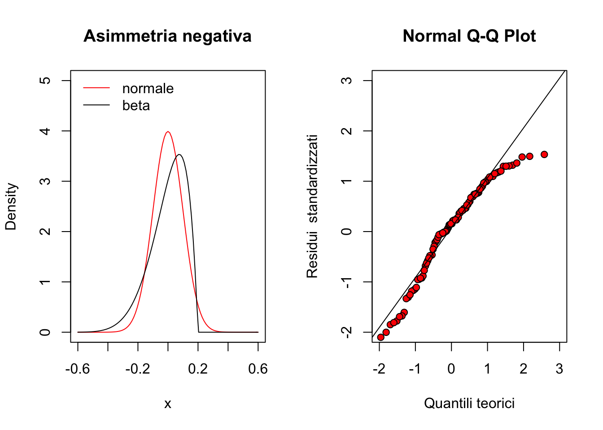
Per quanto riguarda la curtosi, è necessario osservare le code della distribuzione: se queste sono più alte di una distribuzione normale parliamo di distribuzione platicurtica, come, ad esempio, una distribuzione di t di Student con pochi gradi di libertà.
#Estraggo una campione da una t di Student
par(mfrow=c(1,2))
curve(dnorm(x), from=-5, to=5, col="red",
ylab="Density", main="Distribuzione platicurtica")
curve(dt(x, 1), add=T)
legend("topleft", legend=c("normale", "t (1 DF)"),
lty=c(1,1), col=c("red", "black"), bty="n")
set.seed(1230)
d <- rt(100, 1)
res <- scale(d, scale=T)
#Produco un QQ-plot
qqnorm(res, xlab="Quantili teorici",
ylab = "Residui standardizzati",
pch=21, bg="red", xlim=c(-2,3), ylim=c(-2,3))
qqline(res)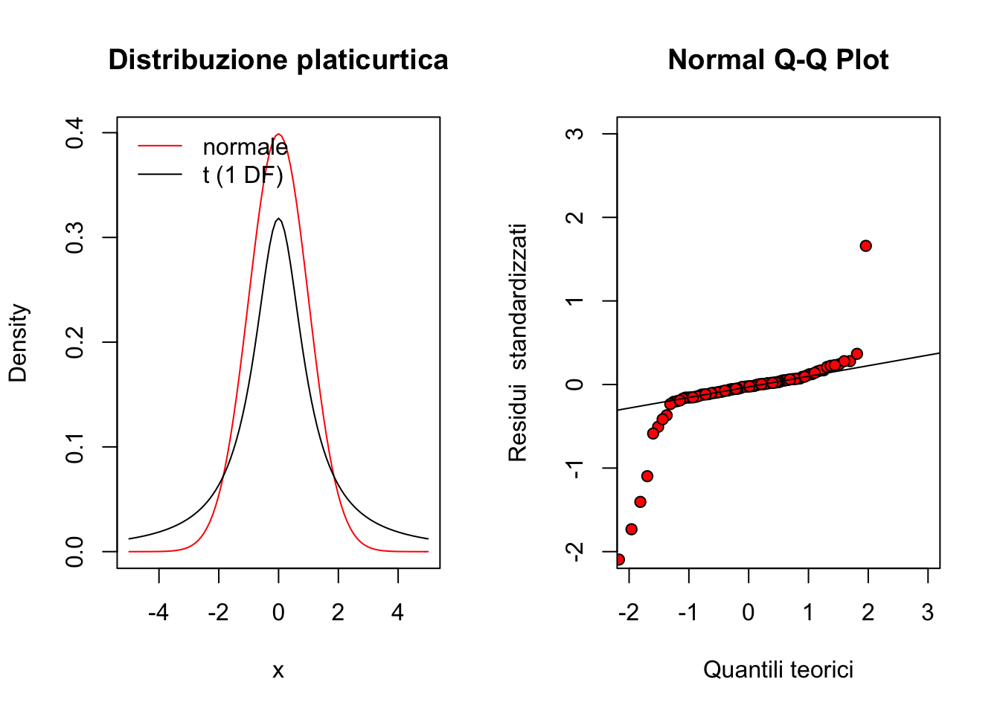
Analogamente, vediamo come si presenta un QQ-plot per una distribuzione leptocurtica (più bassa sulle code; esempio: distribuzione uniforme).
#Estraggo una campione da una distribuzione uniforme
par(mfrow=c(1,2))
curve(dunif(x, -2,2), from=-5, to=5, ylab="Density", main="Distribuzione leptocurtica")
curve(dnorm(x, 0, 2), add=T, col="red")
set.seed(1230)
d <- runif(100, -2, 2)
res <- scale(d, scale=T)
#Produco un QQ-plot
qqnorm(res, xlab="Quantili teorici",
ylab = "Residui standardizzati",
pch=21, bg="red", xlim=c(-2,3), ylim=c(-2,3))
qqline(res)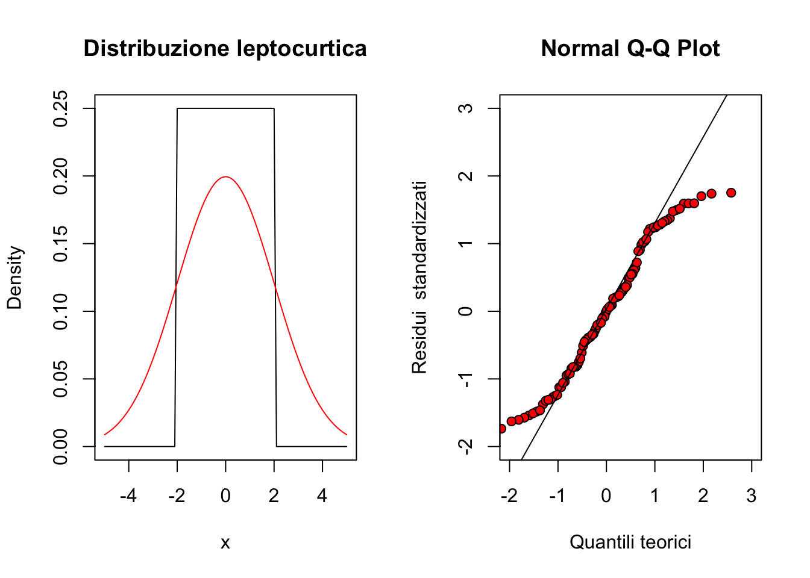
11.4 Altri strumenti diagnostici
La valutazioni precedentemente esposte sono di tipo grafico e sono considerate sufficientemente robuste per la maggior parte delle situazioni. Tuttavia, esistono anche test statistici che consentono di saggiare l’ipotesi nulla di ’assenza di deviazioni’. Per tutti questi test, l’ipotesi nulla è quella di assenza di deviazioni. Pertanto, basta guardare il ’p value’: se questo è inferiore a 0.05 l’ipotesi nulla deve essere rifiutata e può essere necessario intraprendere azioni correttive.
Per l’omogeneità delle varianze veniva utilizzato il test di Bartlett, che, tuttavia, è oggi caduto in disuso, data la sua sensibilità alla non-normalità dei residui, quasi sempre presente, insieme all’eteroscedasticità. Oggi si preferisce utilizzare il test di Levene, che consiste in un’ANOVA dei residui, al posto dei dati osservati:
library(aomisc)
data(sinapis)
head(sinapis)## density yield
## 1 0 36.63
## 2 14 29.73
## 3 19 32.12
## 4 28 30.61
## 5 32 27.70
## 6 38 27.43model <- lm(yield ~ factor(density), data=sinapis)
anova( lm (abs(residuals(model)) ~ factor(density), data=sinapis))## Analysis of Variance Table
##
## Response: abs(residuals(model))
## Df Sum Sq Mean Sq F value Pr(>F)
## factor(density) 6 8.4359 1.40598 1.4215 0.2531
## Residuals 21 20.7714 0.98911car::leveneTest(yield ~ factor(density), data=sinapis, center=mean)## Levene's Test for Homogeneity of Variance (center = mean)
## Df F value Pr(>F)
## group 6 1.4215 0.2531
## 21Il test di Levene può anche essere effettuato considerando gli scarti rispetto alla mediana (invece che alla media), in modo da ottenere un test più robusto nei confronti degli outliers.
Per quanto riguarda le deviazioni dalla normalità, può essere utilizzato il test di Shapiro-Wilks. Per esempio, nel caso di un dataset ottenuto da una distribuzione uniforme, il test di Shapiro porta ai risultati sotto indicati.
shapiro.test(runif(100, min = -2, max = 2))##
## Shapiro-Wilk normality test
##
## data: runif(100, min = -2, max = 2)
## W = 0.94318, p-value = 0.000302811.5 Risultati contraddittori
La valutazione degli assunti di base è un passo fondamentale nell’analisi dei dati sperimentali è non può essere evitata in nessun modo. Il problema è importante perché ogni deviazione rispetto agli anzidetti requisiti può inficiare la validità dei test d’ipotesi, modificando il livello di significatività e di protezione.
Tuttavia, ricordiamo sempre che la ’verità vera’ ci sfugge e, di conseguenza, le valutazioni sull’adozione di eventuali trasformazioni stabilizzanti debbono essere condotte con il massimo ’buon senso’!
In particolare nella pratica è molto facile incontrare situazioni dubbie, nelle quali l’analisi dei residui mostra deviazioni, mentre il test di Bartlett è significativo e quello di Levene no. Come comportarsi? Misurare sempre la forza dell’evidenza ’patologica’: quanti campanelli di allarme abbiamo?
11.6 ‘Terapia’
Se le procedure diagnostiche hanno evidenziato deviazioni rispetto agli assunti di base, è necessario valutare se e come intraprendere azioni correttive. Ovviamente, la ‘terapia’ cambia al cambiare della ‘patologia’.
11.6.1 Correzione/Rimozione degli outliers
In presenza di outliers, la ‘terapia’ più opportuna è, banalmente, quella di rimuoverli, ottenendo così un dataset ‘sbilanciato’ (diverso numero di repliche per trattamento). Oggigiorno, trattare un dataset sbilanciato non costituisce un problema, ovviamente se si utilizzano le metodiche di analisi opportune. Qualche anno fa, al contrario, si cercava di evitare lo sbilanciamento a tutti i costi, utilizzando tecniche di imputing per l’immissione di valori ’ragionevoli’ in sostituzione di quelli mancanti/aberranti.
Ad esempio, se il disegno sperimentale era a randomizzazione completa, il dato mancante veniva sostituito con la media delle altre repliche. Se invece il disegno era a blocchi randomizzati, allora si teneva conto non solo della media del trattamento di cui il dato mancante faceva parte, ma anche delle media del blocco nel quale esso si trovava. La formula era la seguente:
\[Y = \frac{tT + rR - G}{(t - 1)(r - 1)}\]
dove t è il numero delle tesi, r è il numero delle repliche, T è la somma dei dati relativi alla tesi che contiene il dato mancante (ovviamente escluso quest’ultimo), R è la somma dei dati relativi al blocco che contiene il dato mancante (sempre escluso quest’ultimo), G è il totale generale (escluso il dato mancante).
Un aspetto da non trascurare è che, imputando un dato, si rimuove lo sbilanciamento, ma non si recuperano le informazioni mancanti. Infatti il dato imputato non fornisce informazioni aggiuntive, perché è ottenuti come combinazione lineare degli altri. Di conseguenza, per ogni dato imputato, è necessario ridurre di un’unità il numero dei gradi di libertà della varianza residua, e ricalcolare F, SEM e SED di conseguenza.
Possiamo comunque ritenere che, oggigiorno, le tecniche di imputing dei dati aberranti/mancanti sono da ritenersi obsolete. Inoltre, vogliamo porre l’attenzione sul fatto che i dati aberranti sono dati molto ‘influenziali’, nel senso che possono influenzare in modo molto marcato il risultato dell’analisi. Pertanto, se è sbagliato correggerli arbitrariamente, senza aver prima accertato che siano effettivamente frutto di errore, è altrettanto sbagliato lasciarli nel dataset. Ovviamente, la correzione non può che riguardare una larga minoranza dei dati sperimentali raccolti (uno o due dati), altrimenti si dovrà necessariamente pensare di ripetere l’esperimento.
11.6.2 Correzione del modello
Abbiamo visto che il modello impiegato potrebbe non essere adatto a descrivere il dataset (mancanza di adattamento). Gli effetti potrebbero non essere addittivi, ma moltiplicativi, oppure potrebbero essere non-lineari. Potrebbero essere presenti asintoti che il nostro modello non è in grado di descrivere, oppure la crescita/decrescita osservata potrebbero essere più lente/veloci di quanto la nostra funzione sia in grado di modellizzare.
Per tutti questi casi, l’unica operazione consigliabile è quella di modificare il modello, adottando ai dati un diverso modello. Un’altra strategia è quella di trasformare la variabile dipendente, in modo che il modello impiegato possa descriverla più correttamente. Ad esempio, se i dati mostrano un andamento esponenziale, trasformandoli in logaritmo questi potreanno essere descritti molto meglio con un equazione lineare.
11.6.3 Non-normalità dei residui ed eterogeneità delle varianze
Trattiamo queste due deviazioni insieme in quanto esse sono spesso associate nello stesso dataset. Entrambe hanno conseguenze gravi: gli intervalli di confidenza non hanno un buon grado di copertura e i test d’ipotesi sono invalidi. I reviewer delle riviste scientifiche sono sempre molto sospettosi delle eventuali deviazioni rispetto agli assunti di base, soprattutto quando i dati sono non-continui (conteggi e/o proporzioni) e, di conseguenza, non sono naturalmente riconducibilli ad una distribuzione normale.
Evidentemente, la cosa più corretta è quella di chiedersi perché il dataset è non-normale e/o eteroscedastico ed incorporare queste informazioni nel modello. Ad esempio, un conteggio potrebbe seguire la distribuzione di Poisson, oppure una serie di proporzioni potrebbero seguire la distribuzione binomiale. In questi casi potrebbe essere opportuno utilizzare modelli lineari generalizzati (GLiM), oppure, in caso di eterogeneità delle varianze, si potrebbero incorporare nel modello eventuali relazioni di proporzionalità tra media e varianza, con tecniche di minimi quadrati generalizzati (GLS). Si tratta di tecniche statistiche piuttosto avanzate, che richiedono una buona esperienza per essere utilizzate con profitto.
In altri casi si può ricorrere a metodiche statistiche che fanno meno assunzioni e che, pertanto, sono dette metodiche ‘non-parametriche’. Di queste non parleremo, per una questione di preferenze personali: a mio modo di vedere, utilizzare metodiche non-parametriche è come rinuciare in partenza a comprendere le basi biologiche del fenomeno e le intrinseche relazioni causa-effetto che sussistono nella realtà.
Una strategia empirica, ma molto seguita in pratica e caratterizzata da un’efficacia non disprezzabile, è quella di ricorrere alle trasformazioni correttive. Con questa tecnica, si va a cercare una metrica sulla quale le assunzioni di base dell’ANOVA siano rispettate e si esegue l’elaborazione dei dati trasformati invece che di quelli non trasformati.
Per i conteggi e per l’eterogeneità delle varianze di variabili continue, si consiglia la trasformazione in radice quadrata o in logaritmo, scegliendo in base a quella che consente la miglior distribuzione dei residui. Per le proporzioni, taluni consigliano la trasformazione nell’arcoseno della radice del valore, che è implementata nel package ‘aomisc’, nella funzione ‘angularTransform()’. Questa funzione rivceve come input un valore percentuale e resituisce l’arcoseno della radice quadrata della proporzione corrispondente.
aomisc::angularTransform(c(26, 47, 25, 28, 24))## [1] 30.65730 43.28009 30.00000 31.94806 29.3338711.6.4 La procedura di Box e Cox
Per evitare una trasformazione ‘al buio’, si può impiegare la procedura suggerita da Box e Cox (1964). Questa si basa su alcune famiglie di trasformazioni, tra cui la più diffusa è:
\[ W = \left\{ \begin{array}{ll} \frac{Y^\lambda}{\lambda - 1} & \quad \textrm{if} \, \lambda \neq 0 \\ \log(Y) & \quad \textrm{if} \, \lambda = 0 \end{array} \right. \]
dove W è la variabile trasformata, Y è la variabile originale e \(\lambda\) è il parametro che definisce la trasformazione. In particolare, osserviamo che se \(\lambda\) è pari ad 1 i dati non sono, di fatto, trasformati, se è pari a 0.5 abbiamo una trasformazione equivalente alla radice quadrata, se è pari a 0 abbiamo la trasformazione logaritmica, se è pari a -1 abbiamo una trasformazione equivalente al reciproco.
Se consideriamo valori di λ variabili tra -2.5 e 2.5 (ad esempio) con uno scarto di 0.25, operiamo le relative trasformazioni e applichiamo il modello lineare ai dati trasformati, possiamo calcolare la verosimiglianza della trasformazione, individuare il valore di λ che la massimizza ed utilizzarlo per la trasformazione.
In R questa procedura è automatizzata nella funzione ‘boxcox()’, disponibile nel package MASS. Proviamo ud utilizzare questa procedura nel dataset ‘insects’, disponibile nel package ‘aomisc’.
data(insects)
mod <- lm(Count ~ Insecticide, data = insects)
plot(mod, which = 1)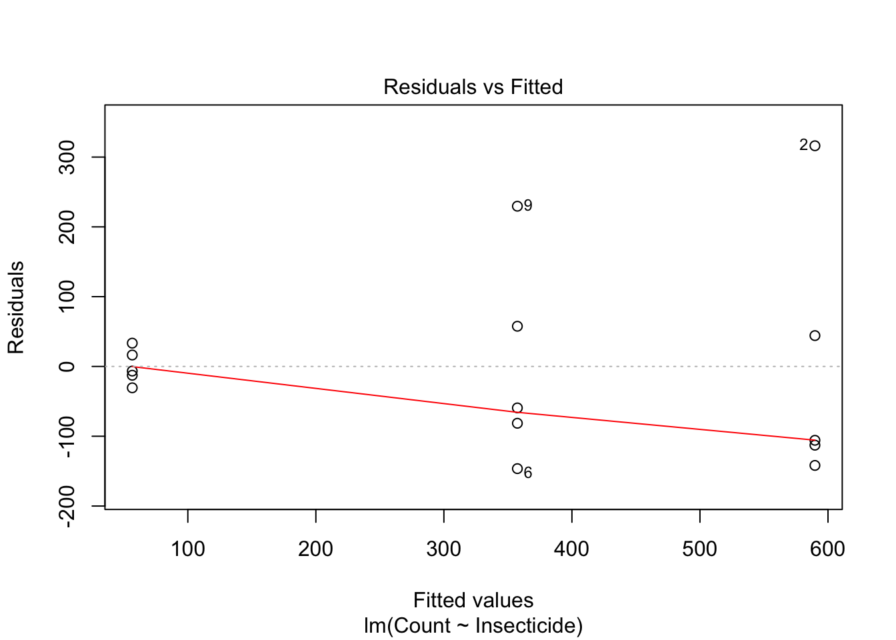
Questo dataset mostra una chiara eteroscedasticità. Utilizziamo quindi la funzione ‘boxcox()’ per individuare la trasformazione più adatta a correggere questa patologia.
MASS::boxcox(mod)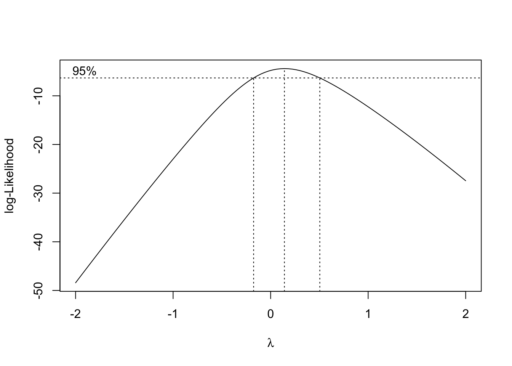
Dal grafico si individua chiaramente che la trasformazione migliore, scelta tra quelle più semplici e comprensibili, è quella xhe corrisponde a \(\lambda = 0\), cioè la trasformazione logaritmica.
mod <- lm(log(Count) ~ Insecticide, data = insects)
plot(mod, which = 1)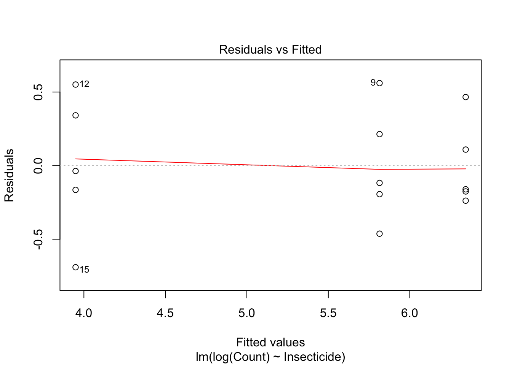
Vediamo che i dati trasformati non mostrano più alcun sintomo di eteroscedasticità e, di conseguenza, l’ANOVA su questa metrica è affidabile.
Ovviamente, vi sarà la complicazione che i risultati dovranno essere commentati nella scala trasformata e quindi la loro interpretazione risulterà più complicata.
11.7 Referenze bibliografiche per approfondimenti
Ahrens, W. H., D. J. Cox, and G. Budwar. 1990, Use of the arcsin and square root trasformation for subjectively determined percentage data. Weed science 452-458.
Anscombe, F. J. and J. W. Tukey. 1963, The examination and analysis of residuals. Technometrics 5: 141-160.
Babbini, M., B. Chiandotto, G. Chisci, R. d. Cristofaro, G. A. Maccararo, N. Montanaro, F. Nicolis, E. Ottaviano, F. Salvi, and M. Turri. 1978. Biometria: principi e metodi per studenti e ricercatori biologi. Padova: P. 552.
Box, G. E. P. and D. R. Cox. 1964, An analysis of transformations. Journal of the Royal Statistical Society, B-26, 211-243, discussion 244-252.
Camussi , A., F. Moller , E. Ottaviano , and M. Sarli Gorla . 1986, Metodi statistici per la sperimentazione biologica. Ed. Zanichelli.
Chatfield, C. 1985, The initial examination of data. J. R. Statist. Soc. A-148, 3, 214-253 A-148: 214-253.
D’Elia, A. 2001, Un metodo grafico per la trasformazione di Box-Cox: aspetti esplorativi ed inferenziali. STATISTICA LXI: 630-648.
Draper, N. R. and H. Smith. 1981, Applied regression. John Wiley & Sons, Inc. , New York, 2nd ed.
Saskia, R. M. 1992, The Box-Cox transformation technique: a review. Statistician 41: 169-178.
Snedecor, G. W. and W. G. Cochran. 1991. Statistical methods. AMES (Iowa): IOWA State University Press, VIII Edition. P. 503.